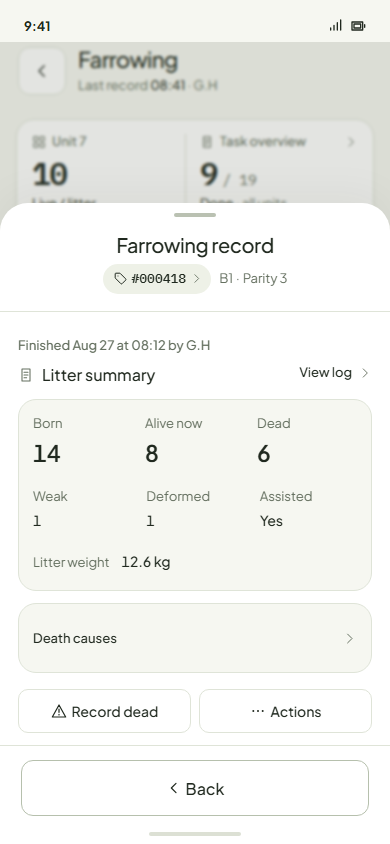
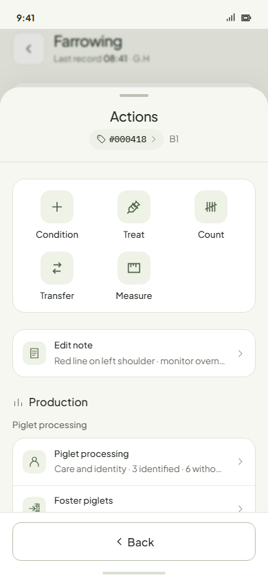
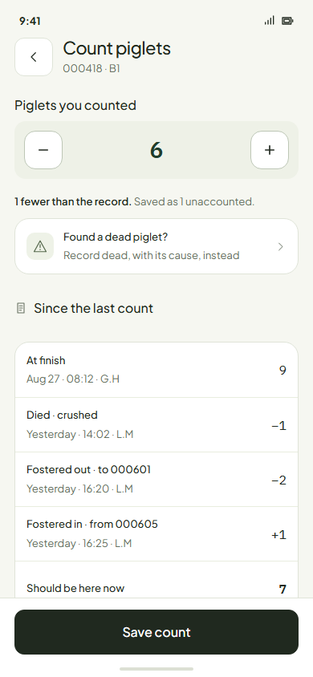
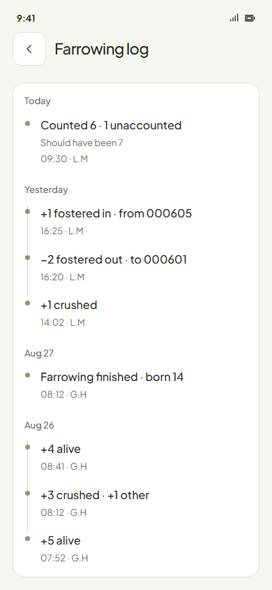

Farrowing · Edit record · product round · 2 Nov
Fix while she farrows. Count after she finishes.
Edit record stays only while she is farrowing, where a worker can honestly remember a wrong tap. Finish farrowing locks the record. After that, a new generic Count in Actions takes the place of every post-Finish correction. It shows what should be there and why, and saves any difference as unaccounted. Total born and the death causes never move.
The recommended option, at 390 in the real prototype parts




Why
Today8 kinds of correction across 4 doors. The same tap means different things: lowering crushed before Finish lowers Total born, after Finish it raises Alive. Two doors (More born, Reconcile) can raise a Total born that Finish froze.
At the crateBefore Finish a worker can know a wrong tap or cause. A day later nobody can tell crushed from starved, or prove more or fewer born. A count proves what is there now, not what was born.
A blind pass by another model family (OpenAI), given only the requirements, reached the same split: corrections are one thing, a count that never touches Total born is another. From it: no reason on a count, a rule for a body found after a count, and fosters must be recordable. It would also allow a proven mistake to be fixed after Finish (Q2).
What it retires
- Edit record after Finish, Correct born (More born / Count was wrong), Edit finish details.
- “Anyone may amend born post-lock”, and the post-lock half of “What Edit adjusts”.
- Reconcile piglet count becomes Count. It no longer raises Total born or needs a typed reason.
Your calls
- Lock Total born, the causes and the finish details at Finish, on the phone? Recommend yes: your direction.
- A proven mistake found after Finish (a line saved twice): leave it, or let a supervisor correct it later on desktop? Recommend leaving it on the phone and parking a supervisor correction. The other model would allow it on that log line, original kept.
- Open Foster piglets for every litter (not only when the sow died)? Without it, every foster shows up as “unaccounted”. Recommend yes.
- A body found after a count already took it as unaccounted: should Record dead ask “One of the 1 unaccounted?” (Yes / No, only then)? Recommend yes, or the piglet is taken twice.
- Assisted and litter weight after Finish: locked too? Recommend locked: the Finish form is the check.
- A reason on a count difference: none, or required (as Reconcile asks today)? Recommend none (as Piglet processing, Round 9).
Full round, with the current-state shots, scenarios and the three options: features/farrowing/edit-record-round.md